Night windows
| Night | Astro dusk | Astro dawn | Length | Elapsed | km (cutoff pace) |
|---|---|---|---|---|---|
| 1 | Fri 18 Sep 19:19 | Sat 19 Sep 04:37 | 9h 18m | 11h 20m–20h 37m | 36–66 |
| 2 | Sat 19 Sep 19:18 | Sun 20 Sep 04:37 | 9h 19m | 35h 19m–44h 38m | 116–144 |
Twilight (context)
| Event | Local time | Elapsed |
|---|---|---|
| sunset | Fri 18 Sep 18:04 | 10h 05m |
| civil dusk | Fri 18 Sep 18:27 | 10h 27m |
| nautical dusk | Fri 18 Sep 18:53 | 10h 53m |
| astronomical dusk | Fri 18 Sep 19:19 | 11h 20m |
| astronomical dawn | Sat 19 Sep 04:37 | 20h 37m |
| nautical dawn | Sat 19 Sep 05:03 | 21h 04m |
| civil dawn | Sat 19 Sep 05:29 | 21h 30m |
| sunrise | Sat 19 Sep 05:52 | 21h 52m |
| sunset | Sat 19 Sep 18:03 | 34h 04m |
| civil dusk | Sat 19 Sep 18:26 | 34h 26m |
| nautical dusk | Sat 19 Sep 18:52 | 34h 52m |
| astronomical dusk | Sat 19 Sep 19:18 | 35h 19m |
| astronomical dawn | Sun 20 Sep 04:37 | 44h 38m |
| nautical dawn | Sun 20 Sep 05:04 | 45h 04m |
| civil dawn | Sun 20 Sep 05:30 | 45h 30m |
| sunrise | Sun 20 Sep 05:52 | 45h 52m |
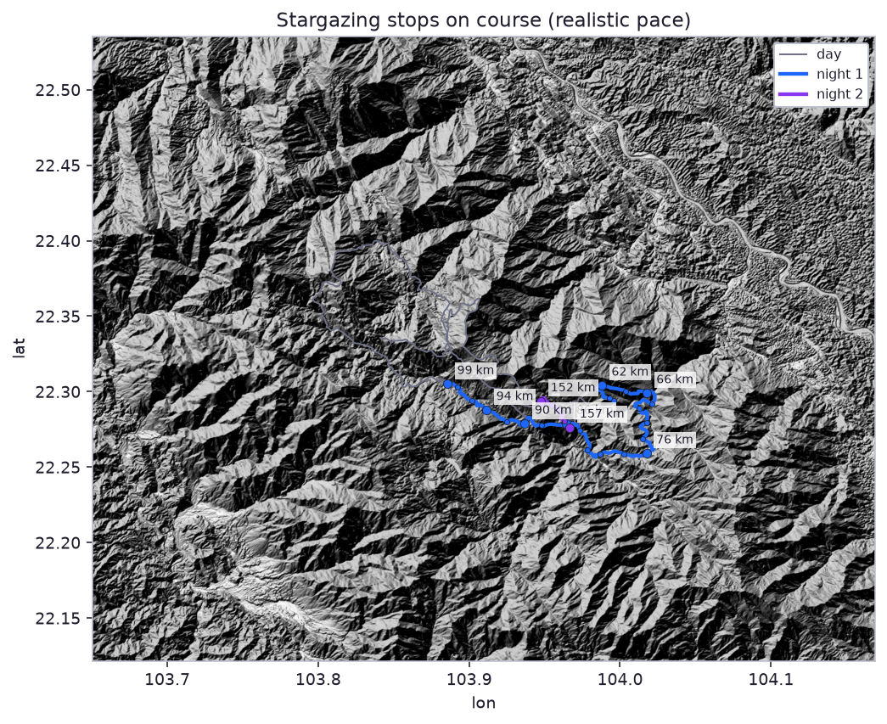
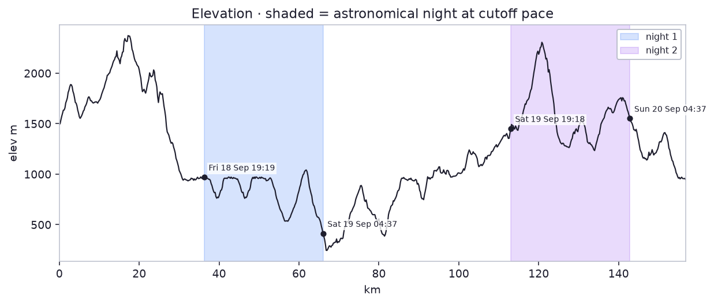
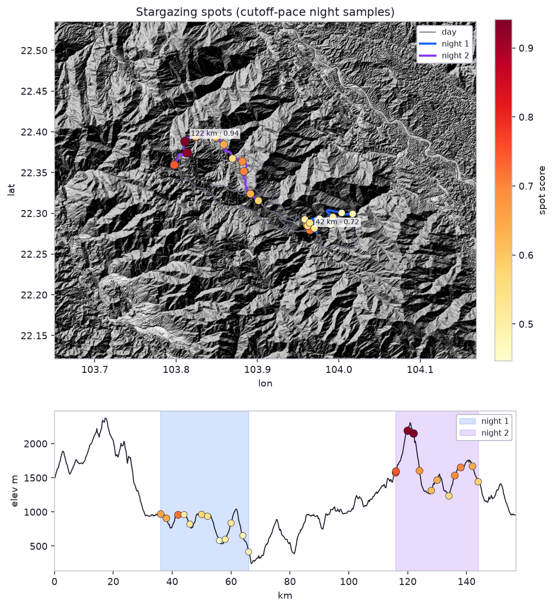
Night 1
Fri 18 Sep 19:19 → Sat 19 Sep 04:37 (elapsed 11h 20m–20h 37m, km 36–66 at cutoff pace).
Moon first quarter, 49% lit, below the terrain horizon. Milky Way centre is below the local horizon. Overhead: Andromeda, Aries, Pegasus.
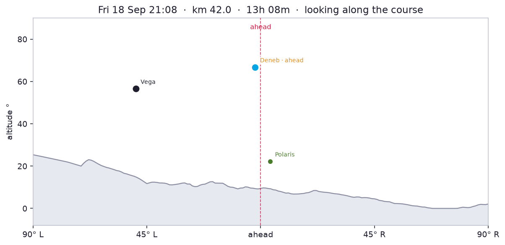
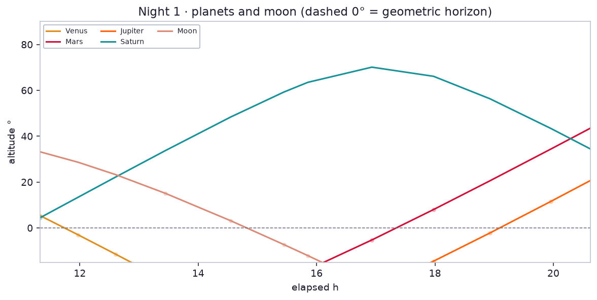
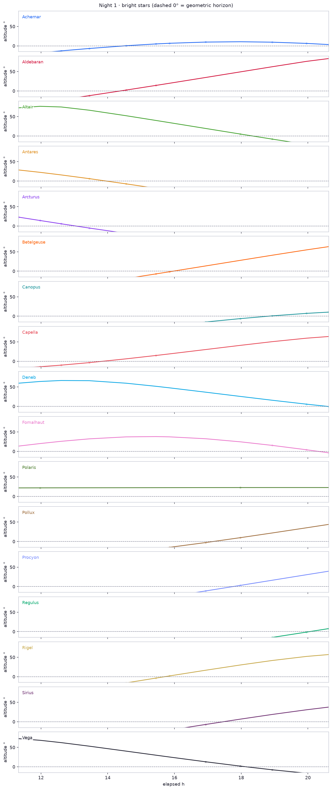
Fri 18 Sep 19:19 · elapsed 11h 20m · km 36.1 · 969 m

Moon first quarter, 47% lit, 33° SW (207°).
Milky Way centre 35° S (201°).
Planets
- Venus: 5° W (248°), mag -4.8 — behind terrain
- Saturn: 4° E (89°), mag 0.4
Constellations
- Overhead: Aquila, Cygnus, Lyra, Ophiuchus
- Up: Aquarius, Capricornus, Cassiopeia, Cepheus, Corona Borealis, Draco, Pegasus, Sagittarius, Scorpius, Serpens
- Rising: Andromeda, Grus, Piscis Austrinus, Ursa Minor
- Setting: Ursa Major
Bright stars
- Vega (Lyra): 72° N (342°), mag 0.0
- Altair (Aquila): 73° SE (138°), mag 0.8
- Fomalhaut (Piscis Austrinus): 14° SE (130°), mag 1.2
- Deneb (Cygnus): 60° NE (35°), mag 1.2
- Polaris (Ursa Minor): 22° N (1°), mag 2.0
Sat 19 Sep 00:16 · elapsed 16h 16m · km 52.0 · 937 m
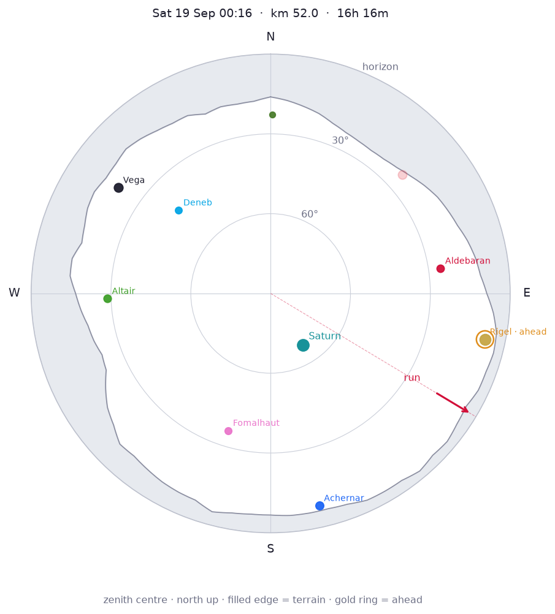
Moon first quarter, 49% lit, below the terrain horizon.
Milky Way centre is below the local horizon.
Planets
- Saturn: 67° SE (148°), mag 0.4
Constellations
- Overhead: Andromeda, Aries, Pegasus
- Up: Aquarius, Aquila, Capricornus, Cassiopeia, Cepheus, Cetus, Cygnus, Perseus, Phoenix, Pisces, Piscis Austrinus, Taurus
- Rising: Eridanus, Orion, Ursa Minor
- Setting: Draco, Grus, Lyra
Bright stars
- Vega (Lyra): 20° NW (305°), mag 0.0
- Rigel (Orion): 8° E (102°), mag 0.1
- Achernar (Eridanus): 8° S (167°), mag 0.5
- Altair (Aquila): 29° W (268°), mag 0.8
- Aldebaran (Taurus): 26° E (82°), mag 0.8
- Fomalhaut (Piscis Austrinus): 36° S (197°), mag 1.2
- Deneb (Cygnus): 43° NW (312°), mag 1.2
- Polaris (Ursa Minor): 23° N (0°), mag 2.0
Sat 19 Sep 04:37 · elapsed 20h 37m · km 65.9 · 416 m
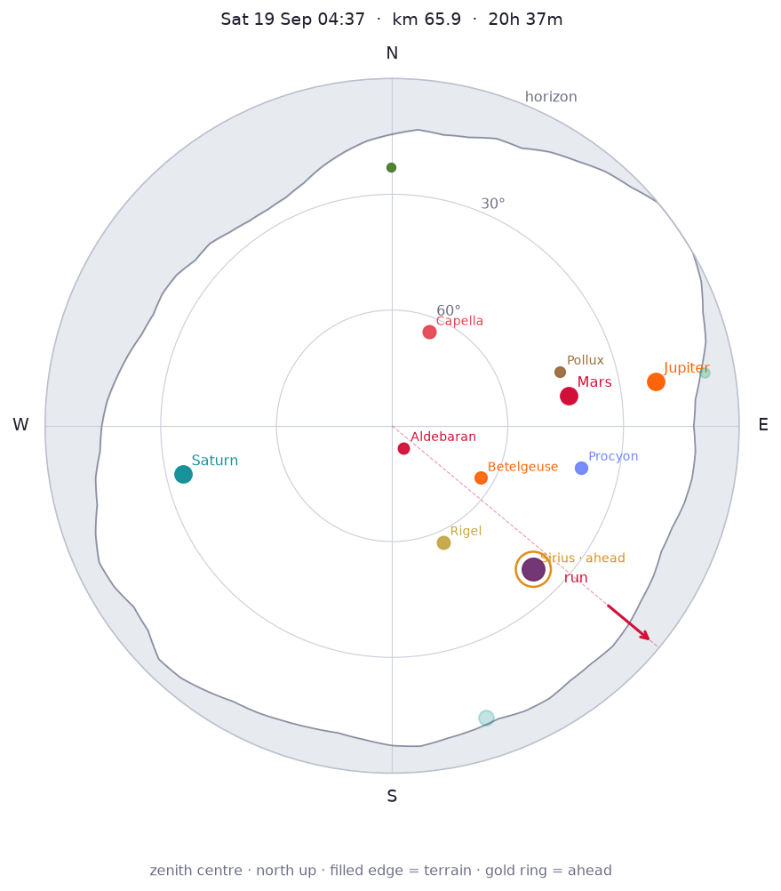
Moon first quarter, 50% lit, below the terrain horizon.
Milky Way centre is below the local horizon.
Planets
- Mars: 44° E (80°), mag 1.2
- Jupiter: 21° E (80°), mag -1.8
- Saturn: 34° W (257°), mag 0.4
Constellations
- Overhead: Auriga, Cetus, Orion, Perseus, Taurus
- Up: Andromeda, Aries, Canis Major, Canis Minor, Cassiopeia, Columba, Gemini, Lepus, Pegasus, Pisces
- Rising: Ursa Major
- Setting: Ursa Minor
Bright stars
- Sirius (Canis Major): 38° SE (135°), mag -1.5
- Capella (Auriga): 64° N (22°), mag 0.1
- Rigel (Orion): 57° SE (156°), mag 0.1
- Procyon (Canis Minor): 40° E (102°), mag 0.3
- Betelgeuse (Orion): 63° SE (120°), mag 0.4
- Aldebaran (Taurus): 84° SE (152°), mag 0.8
- Pollux (Gemini): 44° E (72°), mag 1.1
- Polaris (Ursa Minor): 23° N (360°), mag 2.0
All night samples (cutoff pace)
| Local | Elapsed | km | Elev | Heading |
|---|---|---|---|---|
| Fri 18 Sep 19:19 | 11h 20m | 36.1 | 969 m | 328° |
| Fri 18 Sep 19:53 | 11h 53m | 38.0 | 907 m | 123° |
| Fri 18 Sep 21:08 | 13h 08m | 42.0 | 957 m | 357° |
| Fri 18 Sep 21:45 | 13h 46m | 44.0 | 961 m | 49° |
| Fri 18 Sep 22:23 | 14h 24m | 46.0 | 821 m | 180° |
| Fri 18 Sep 23:38 | 15h 39m | 50.0 | 962 m | 319° |
| Sat 19 Sep 00:16 | 16h 16m | 52.0 | 937 m | 121° |
| Sat 19 Sep 01:31 | 17h 32m | 56.0 | 581 m | 132° |
| Sat 19 Sep 02:09 | 18h 09m | 58.0 | 598 m | 1° |
| Sat 19 Sep 02:46 | 18h 47m | 60.0 | 838 m | 300° |
| Sat 19 Sep 04:02 | 20h 02m | 64.0 | 653 m | 182° |
| Sat 19 Sep 04:37 | 20h 37m | 65.9 | 416 m | 130° |
Night 2
Sat 19 Sep 19:18 → Sun 20 Sep 04:37 (elapsed 35h 19m–44h 38m, km 116–144 at cutoff pace).
Moon first quarter, 58% lit, below the terrain horizon. Milky Way centre is below the local horizon. Overhead: Andromeda, Pegasus.

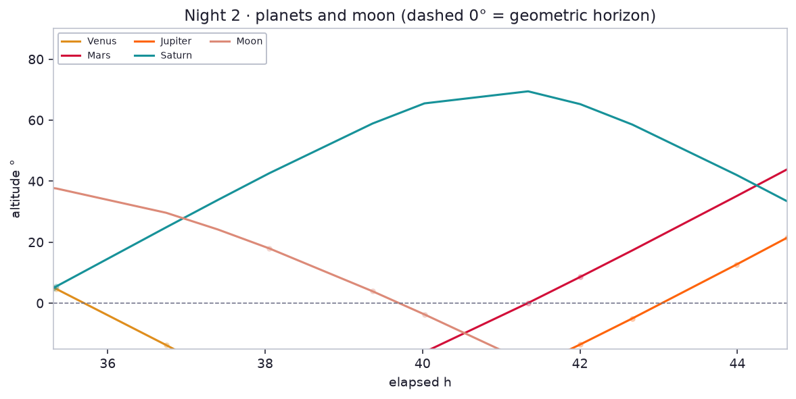
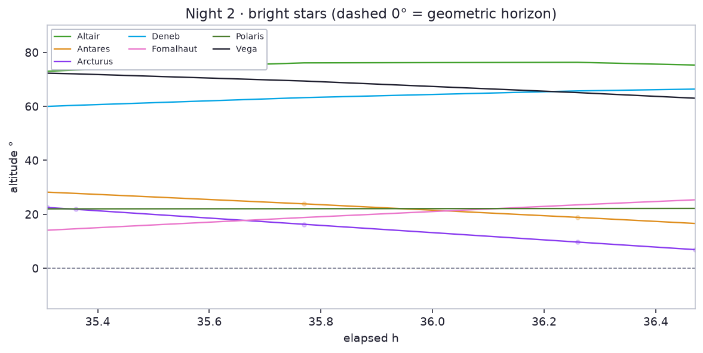
Sat 19 Sep 19:18 · elapsed 35h 19m · km 115.9 · 1574 m
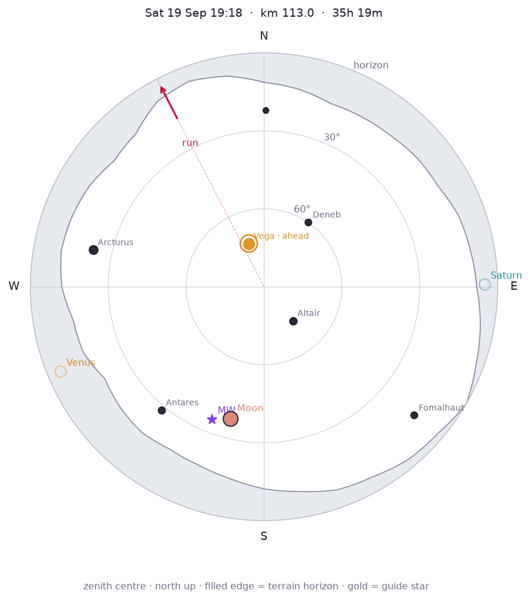
Moon first quarter, 56% lit, 38° S (194°). Bright enough to wash out the Milky Way and faint constellations.
Milky Way centre 35° S (201°).
Planets
- Venus: 5° SW (247°), mag -4.8 — behind terrain
- Saturn: 5° E (89°), mag 0.4 — behind terrain
Constellations
- Overhead: Aquila, Cygnus, Lyra, Ophiuchus
- Up: Aquarius, Capricornus, Cassiopeia, Cepheus, Corona Borealis, Draco, Pegasus, Sagittarius, Scorpius, Serpens
- Rising: Andromeda, Grus, Pavo, Piscis Austrinus, Ursa Minor
- Setting: Boötes, Ursa Major
Bright stars
- Arcturus (Boötes): 23° W (282°), mag -0.1
- Vega (Lyra): 72° N (341°), mag 0.0
- Altair (Aquila): 73° SE (140°), mag 0.8
- Antares (Scorpius): 28° SW (220°), mag 1.0
- Fomalhaut (Piscis Austrinus): 14° SE (131°), mag 1.2
- Deneb (Cygnus): 60° NE (34°), mag 1.2
- Polaris (Ursa Minor): 22° N (1°), mag 2.0
Sun 20 Sep 00:01 · elapsed 40h 01m · km 130.0 · 1466 m
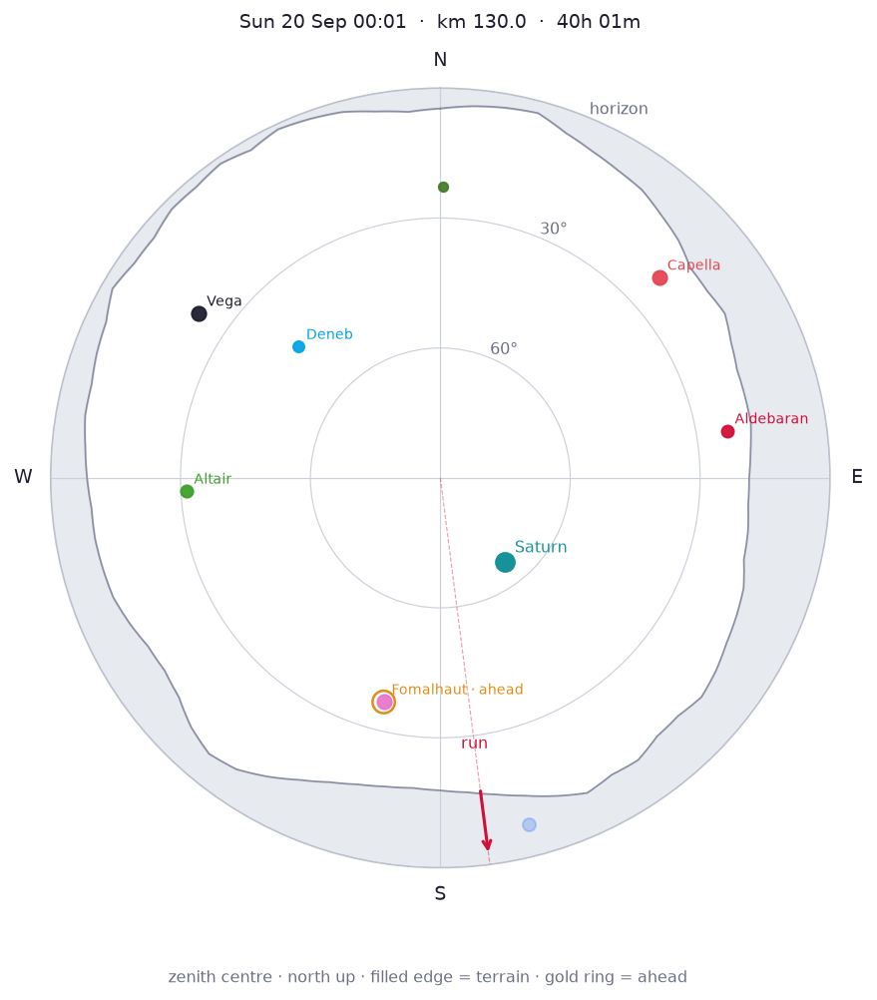
Moon first quarter, 58% lit, below the terrain horizon.
Milky Way centre is below the local horizon.
Planets
- Saturn: 65° SE (142°), mag 0.4
Constellations
- Overhead: Andromeda, Pegasus
- Up: Aquarius, Aquila, Aries, Capricornus, Cassiopeia, Cepheus, Cetus, Cygnus, Perseus, Pisces, Piscis Austrinus
- Rising: Auriga, Phoenix, Taurus, Ursa Minor
- Setting: Draco, Lyra
Bright stars
- Vega (Lyra): 23° NW (304°), mag 0.0
- Capella (Auriga): 21° NE (48°), mag 0.1
- Altair (Aquila): 31° W (267°), mag 0.8
- Aldebaran (Taurus): 23° E (81°), mag 0.8
- Fomalhaut (Piscis Austrinus): 37° S (194°), mag 1.2
- Deneb (Cygnus): 45° NW (313°), mag 1.2
- Polaris (Ursa Minor): 23° N (1°), mag 2.0
Sun 20 Sep 04:37 · elapsed 44h 38m · km 144.0 · 1442 m
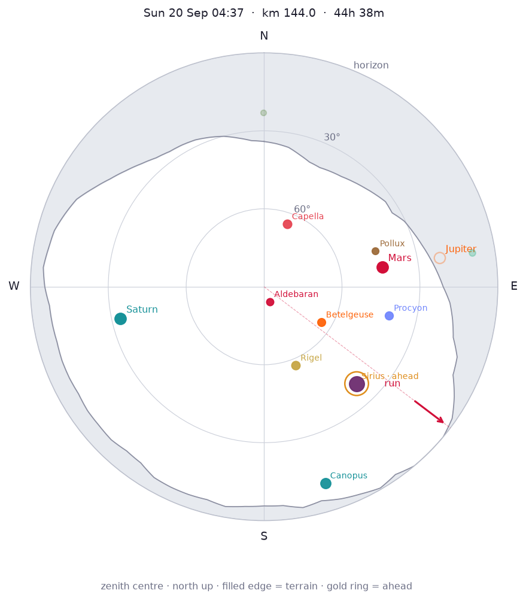
Moon first quarter, 60% lit, below the terrain horizon.
Milky Way centre is below the local horizon.
Planets
- Mars: 44° E (80°), mag 1.2
- Jupiter: 21° E (81°), mag -1.8 — behind terrain
- Saturn: 33° W (258°), mag 0.4
Constellations
- Overhead: Auriga, Cetus, Orion, Perseus, Taurus
- Up: Andromeda, Aries, Canis Major, Canis Minor, Cassiopeia, Columba, Gemini, Lepus, Pegasus, Pisces
- Rising: Carina, Puppis
Bright stars
- Sirius (Canis Major): 38° SE (136°), mag -1.5
- Canopus (Carina): 11° S (163°), mag -0.7
- Capella (Auriga): 64° N (20°), mag 0.1
- Rigel (Orion): 57° S (158°), mag 0.1
- Procyon (Canis Minor): 41° E (103°), mag 0.3
- Betelgeuse (Orion): 64° SE (122°), mag 0.4
- Aldebaran (Taurus): 84° S (160°), mag 0.8
- Pollux (Gemini): 45° E (72°), mag 1.1
All night samples (cutoff pace)
| Local | Elapsed | km | Elev | Heading |
|---|---|---|---|---|
| Sat 19 Sep 19:18 | 35h 19m | 115.9 | 1574 m | 314° |
| Sat 19 Sep 19:20 | 35h 21m | 116.0 | 1595 m | 311° |
| Sat 19 Sep 20:44 | 36h 45m | 120.0 | 2188 m | 308° |
| Sat 19 Sep 21:23 | 37h 24m | 122.0 | 2148 m | 14° |
| Sat 19 Sep 22:03 | 38h 03m | 124.0 | 1603 m | 56° |
| Sat 19 Sep 23:21 | 39h 22m | 128.0 | 1313 m | 95° |
| Sun 20 Sep 00:01 | 40h 01m | 130.0 | 1466 m | 173° |
| Sun 20 Sep 01:20 | 41h 20m | 134.0 | 1234 m | 358° |
| Sun 20 Sep 02:00 | 42h 00m | 136.0 | 1532 m | 125° |
| Sun 20 Sep 02:39 | 42h 40m | 138.0 | 1651 m | 210° |
| Sun 20 Sep 03:59 | 43h 59m | 142.0 | 1669 m | 146° |
| Sun 20 Sep 04:37 | 44h 38m | 144.0 | 1442 m | 127° |